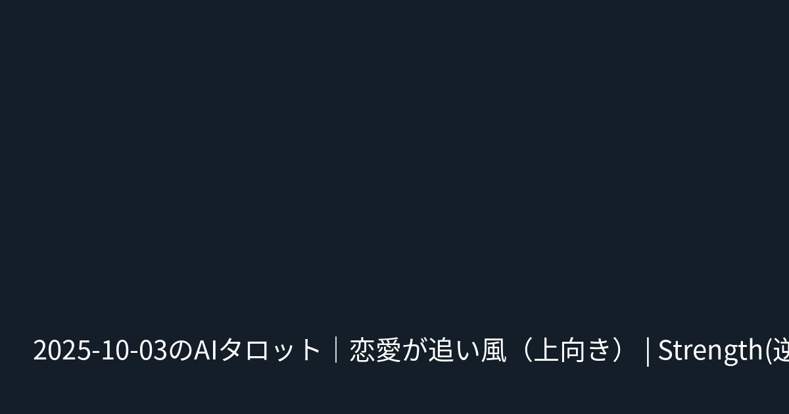

本文
# 2026-09-28のAIタロット｜恋愛が追い風（フラット）｜The Devil・The Magician・Hanged Man 対象: **全体運**（日付: 2026-09-28） ## 今日のスコア（1〜5） - 恋愛運: **4** ★★★★☆ - 仕事運: **2** ★★☆☆☆ - 金運: **3** ★★★☆☆ - 健康運: **3** ★★★☆☆ ## 今日のタロット（3枚） - **The Devil**（正位置） - **The Magician**（正位置） - **Hanged Man**（正位置） ## ラッキー - 色: **ピンク** - アイテム: **腕時計** ## まとめ 平均3.0（フラット）。特に『love』が追い風。カード：The Devil, The Magician, Hanged Man。 ## 一言アドバイス - **恋愛**: 【love】攻めの一手×執着・誘惑の流れ。丁寧に気持ちを言葉にすると、周囲との調整を意識すると運気が伸びます。 - **仕事**: 【work】慎重さ×視点の転換の流れ。約束を守ると、焦らず足元固めを意識すると運気が伸びます。 - **金運**: 【money】整える×一時停止が追い風。固定費を見直すすると良縁が集まります。やり過ぎ注意を心がけて。 - **健康**: 【health】整える×悪癖注意の流れ。軽い運動と、やり過ぎ注意を意識すると運気が伸びます。 --- ※ 本記事はAI生成のエンタメ占いです。参考程度にお楽しみください。 （タグ）占い / タロット / AI占い / 今日の運勢 / The Devil / The Magician / Hanged Man / 恋愛運